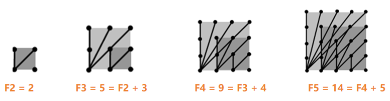

📌 钉板比赛 📏
👋 嗨，魔法工坊的小学徒！我是你的算法向导！
面前是一块神奇的方形钉子板。随着钉子板越来越大，你能连出的魔法线段种类也越来越多。让我们用递归魔法，找出线段生长的秘密吧！
📜 任务清单 (题目描述)
比赛的场地是一个 n * n 的正方形钉子板（即每一边上都有 n 个钉子）。学徒们的任务是连接任意两个钉子，计算可以形成多少种不同长度的线段。
规律举例：
- 对于一个 2 * 2 的钉子板，只有 2 种不同的线段长度。
- 对于一个 3 * 3 的钉子板，则有 5 种不同的线段长度。
计算任务： 请你算出一个 n * n 的钉子板上，所有可能的不同线段长度的种类数。
📥 魔法输入阵：
(钉子板每边有 5 个钉子)
5
📤 奇迹输出阵：
(一共可以连出 14 种长度的线段)
14
🧠 魔法道具箱 (核心图解：线段种类的生长)
遇到在钉板上连线的几何问题，不要慌张，让我们拿出“画图法”这一终极魔法！观察钉板从小变大时，线段种类的增长规律：

👆 仔细观察每次扩大一层，我们能连出多少种“更长跨度”的新线段？👆
-
n = 2
2x2 的钉板。只有“横/竖向直连”和“对角线斜连”两种情况。共计 2 种。
-
n = 3
3x3 钉板。它包含了 2x2 的所有线段，同时往外围拓展，新增了 3 种跨度更大的新线段。
总计 F(2) + 3 = 5 种。
-
n = 4
4x4 钉板。在 3x3 的基础上，它又往外圈扩张，奇迹般地新增了刚好 4 种更长的新线段。
总计 F(3) + 4 = 9 种。
-
n = 5
5x5 钉板。同样地，外围一圈贡献了 5 种突破记录的新长度。
总计 F(4) + 5 = 14 种。
✨ 递推的终极奥义
规律已经直接写在纸上了！每当钉子板的规模从 n-1 扩大到 n 时，那些连接到最外层新钉子上的线段，会为我们提供刚好 n 种前所未有的新长度。
💡 结论：n*n 的钉板线段种类数 = (n-1)*(n-1) 的钉板线段种类数 + n
$$F(n) = F(n-1) + n$$
（初始条件为 F(2) = 2）
📘 C++ 魔法秘籍 (知识点)
- ⚙️ 递归函数的书写： 我们可以直接把数学上的递推公式 F(n) = F(n-1) + n 翻译成 C++ 代码 return f(n-1) + n;。这就是递归算法最迷人的地方：代码即公式！
- 🛡️ 拦截深渊的 Base Case： 写递归最怕的就是“无限坠落”。题目明确告诉我们最小的情况是 2x2 的钉板（种类是 2）。所以必须加上一句 if (n == 2) return 2;，给递归魔法一个坚实的落脚点。
💻 C++ 终极法术 (代码详解)
#include <iostream>
using namespace std;
int f(int n) {
if (n == 2) {
return 2;
}
return f(n - 1) + n;
}
int main() {
int n;
cin >> n;
cout << f(n);
return 0;
}
🐍 Python 魔法秘籍 (知识点)
- ✨ 简洁至上的 Python 递归： Python 的 def 配合 if 语句，能让递归结构显得极其易读。注意判断相等时使用的是双等号 ==。
- ⚡ 递归转循环的思考： 如果 n 非常大（比如超过了 1000），Python 的递归栈会溢出报错。在实际开发中，我们可以轻松用 for 循环从 3 累加到 n 来代替递归，或者直接使用数学求和公式，既安全又高效。
💻 Python 终极法术 (代码详解)
def f(n):
if n == 2:
return 2
return f(n - 1) + n
def main():
n = int(input())
print(f(n))
if __name__ == "__main__":
main()
💡 技巧和重点总结 (划重点啦)
- 🌟 规律胜于穷举： 如果不找规律，你要在 n*n 的点阵里用勾股定理算所有点对的距离再进行去重，那将是一场极其恐怖的灾难！算法竞赛中遇到配有按步进化的插图题目，99% 都是在暗示你：寻找相邻两步之间的差值规律。
- 🌟 相似问题的底层统一： 你有没有发现，这道“钉板比赛”的递推公式 F(n) = F(n-1) + n，和上一道“土地分区”切直线的公式居然一模一样！在数学和算法的世界里，很多看似风马牛不相及的表象，背后的骨架竟然是同一个。
- 🌟 O(1) 的通项公式降维打击： 将 F(n) = F(n-1) + n 展开，其实就是求 3 + 4 + 5 + ... + n 然后再加上基础值 2。利用等差数列求和公式，你可以直接推导出终极公式：\( F(n) = \frac{(n+2)(n-1)}{2} + 1 \)（或者化简为 \( \frac{n(n+1)}{2} - 1 \)）。如果用这个公式算，时间复杂度瞬间变成 O(1)！